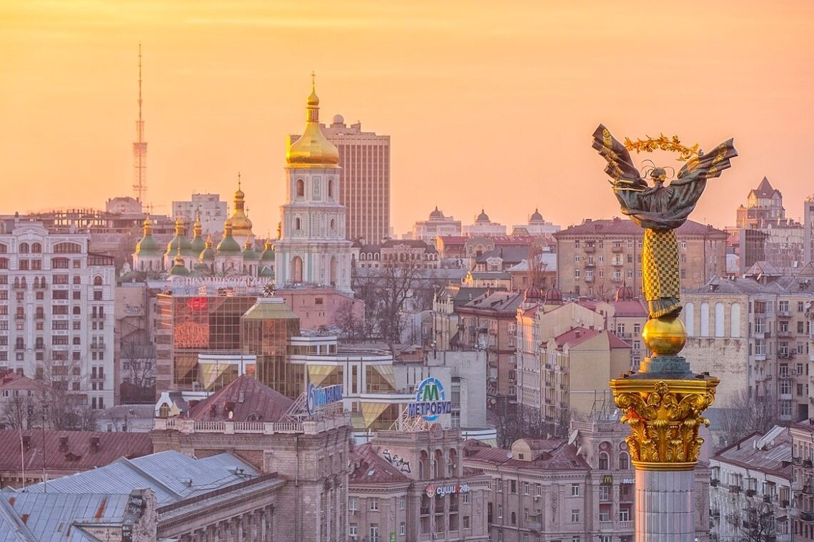

Фото міст

Львів — це культурна та затишна столиця заходу України, відома своєю витонченою архітектурою в стилі бароко й ренесансу та багатими історичними традиціями. Місто зачаровує своєю неповторною атмосферою бруківкових вуличок, старовинних кам'яниць і легендарною кавовою культурою, що вабить гостей з усього світу.

Одеса — це усміхнене, морське серце України, яке заворожує колоритом, вільним духом та неповторним гумором. Вона закохує в себе архітектурою Французького бульвару, величчю Оперного театру, затишними двориками з висіченими білизняними мотузками та нескінченним шумом Чорного моря. Це місто-свято, де солоне морське повітря змішується з ароматом квітучої акації, створюючи особливу, ні з чим не порівнянну атмосферу.

Київ — це місто з понад тисячолітньою історією, де прадавній дух Святої Софії та Києво-Печерської лаври гармонійно співіснує з енергією сучасного мегаполіса. воно заворожує зеленими пагорбами, величним Дніпром, затишними вуличками Подолу та незламним духом своїх жителів. Це серце України, яке надихає своєю красою, силою та особливою атмосферою в будь-яку пору року.